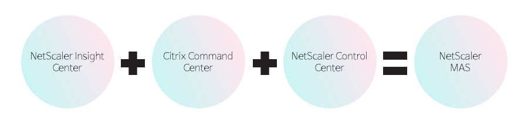

Citrix NetScaler ADC
NetScaler는 애플리케이션이 클라우드로 전환할 때 외부 및 내부 클라우드와 함께 투명하게 보안과 제어를 유지 관리할 수 있게 해 줍니다.
제품소개서 다운로드 홈페이지 바로가기NetScaler Service
Delivery Platforms
소개
NetScaler 제품 형태에 따른 구분

어플라이언스
ADC
일반적인 어플라이언스 형태의 ADC 장비입니다. Advanced Edition을 사용하여 압축 및 캐쉬 그리고 웹 방화벽과 SSL VPN 기능을 단일 장비에서 사용할 수 있습니다.

쉐어드 파티션
ADC
Shared Partition 방식은 시스템 자원을 Partition 별로 제어 할 수 있으며, 클라우드 환경에서 매우 효과적인 방식 입니다.
소프트웨어
ADC
VPX는 다양한 하이퍼바이저 (MS Hyper-V, Xen Server, VMWare) 위에 가상화 스위치로 동작하는 방식입니다.
멀티테넌트
ADC
멀티테넌시를 제공하는 어플라이언스 제품이며, 최대 80개까지의 인스턴스를 단일 장비에서 사용할 수 있습니다.
Citrix NetScaler 도입 효과
서버 성능 및 서비스 안정성 향상
Requesting Switching
- 동일 커넥션 내의 요청 및 응답 기반의 정책 적용을 통한 효율적인 트래픽 제어 기법
Surge Protection
- 클라이언트 트래픽 폭주 시, 트래픽 큐잉 기법을 통한 안정적인 서비스 보장 및 서버 보호 기능
Sure Connect
- 최대 허용 트래픽 초과나 장애 발생 시, Redirection을 통한 실시간 접속 가능 시간 정보 제공(초단위)
Compression
- NetScaler 장비가 사용자의 요청에 응답
- 사용자가 Application에 대한 요청
- NetScaler 장비가 서버와의 Connection 생성
- 사용자의 요청을 서버로 전달
- 추가 사용자의 경우도 동일한 Process 로 처리
- 서버와 NetScaler간의 Connection을 통해 다수의 사용자 요청을 처리
Cache
- 정적/동적 컨텐츠에 대한 메모리 캐쉬 기능을 통한 어플리케이션 응답 속도 개선 및 서버 성능 향상 기능
NetScaler SD-WAN
복잡한 웬 환경에 대한 관리의 편이성 증대 및 보안 / QoS 및
SD-WAN의 기술적용을 통한 서비스 품질향상
NetScaler SD-WAN 제품개요
보안, 비용절감 및 어플리케이션의 가용성 및 전송에 대한 신뢰성 향상
운영비용 감소
가용성 증대
사용자 만족도 증대
지점 네트워크 관리
단순화
중앙 집중식 관리
실시간 웬 링크 모니터링 및 선택적 전송
- UDP를 통한 트래픽 암호
- 양방향 웬 구간 상태 검사
- 어플리케이션 별 선택적 링크선택 기능
- 단방향 구간 회선 선택기능 제공
링크 가상화를 통한 웬 대역폭 향상
- 실시간 웬 구간 상태검사
- 동일 플로우 대한 다중 회선 링크 부하분산 기능제공
- 정책 기반 특정 회선 사용기능 제공
트래픽 복제화를 통화 품질 개선
- 트래픽 복제
- 먼저 수신한 트래픽을 전송
- 단일 링크에서도 복제화 기능제공
- 나중에 수신한 트래픽은 드랍
보다 빠른 페일오버 기능
- 패킷 재전송 기능
- 패킷 손실에 따른 웬 구간 상태 전이(3단계)
지점간 트래픽에 대한 효율성 증대
- 지점간 통신은 본사를 경유하지 않고 직접 통신하는 기능 제공 i.e. VoIP
- 메쉬 아키텍처 기반으로 웬 구간 비용 감소 및 어플리케이션 속도 개선
- 트래픽 정책 기반의 Virtual Path 기능을 통한 구현
인터넷 백홀의 취약점 해결
- Offload Internet traffic to SWG services
- IPSec/GRE handoffs to different service providers, i.e. ZScaler
- Security and consistent policy enforcement for Internet bound traffic (SWG)
다이나믹 라우팅 기능제공
- SD-WAN 장비간 고유 프로토콜 사용 및 이기종(L3) 장비 통신은 전형적인 라우팅 프로토콜 사용
NetScaler MAS
(Management and Analytics System)
NetScaler MAS (Management and Analytics System)는 관리자에게 가시성을 제공하고
여러 Instance에서 실행해야 하는 관리 작업을 자동화하여
운영을 단순화하는 중앙 집중식 관리 솔루션입니다.
Overview
엔드투엔드 네트워크 및 애플리케이션 관리, 가시성 및 자동화

- NetScaler MAS (Management and Analytics System)는 관리자에게 가시성을 제공하고 여러 Instance에서 실행해야 하는 관리 작업을 자동화하여 운영을 단순화하는 중앙 집중식 관리 솔루션입니다.
- Citrix NetScaler MPX, Citrix NetScaler VPX, Citrix NetScaler Gateway, Citrix NetScaler SDX, Citrix NetScaler CPX, Citrix CloudBridge 및 ByteMobile Traffic Director와 같은 Citrix 응용 프로그램 네트워킹 제품을 관리하고 모니터링 할 수 있습니다.
- NetScaler MAS를 사용하여 단일 통합 콘솔에서 전체 글로벌 애플리케이션 delivery infrastructure를 관리, 모니터링 및 문제 해결할 수 있습니다.
- Citrix XenServer 및 VMware ESXi에서 실행되는 가상 어플라이언스 인 NetScaler MAS는 플로우, 사용자 세션 수준 정보, 웹 페이지 성능 데이터와 같은 웹 애플리케이션 및 가상 데스크톱 트래픽에 대한 자세한 정보를 수집하여 애플리케이션 가시성 문제를 해결합니다.
- 사이트의 NetScaler 어플라이언스, NetScaler Gateway 어플라이언스 또는 CloudBridge 어플라이언스를 통해 흐르는 데이터베이스 정보 및 실행 가능한 보고서 제공. 이를 통해 IT 관리자는 문제를 사전에 예방하고 고객 문제를 수분 만에 모니터링 할 수 있습니다.
What's new in
NetScaler MAS 12.0
Release?
통합된 하나의 콘솔을 통해 전체 NetScaler 인프라 관리, 모니터링 및 문제 해결
01.
Configuration Jobs- Master Configuration Template support
- Notifications, Preview, Prompt Credentials
- SCP/SFTP support
- Instance user information in Execution Logs
02.
Configuration Audit- Create Job with Corrective Commands
- Use Configuration Template to create Audit Template
03.
Network Reporting & Monitoring- New Reports
- Thresholds
- Export, Settings and more..
04.
Network Events- SNMPv3 Support
- New Event rules actions and more…
- Event details enhancements
05.
SSL Dashboard- Enhanced dashboard with SSL distributions on Protocols and Virtual Servers
- SSL Auditing
06.
System Administration- Fine Grained Role Based Access Control (RBAC)
- System Notifications based on threshold